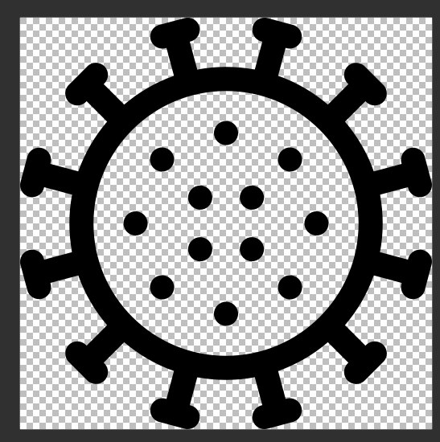

Country selector
Advanced settings
Select countries or activate "all countries" in advanced settings
Countries selection not (yet) available, adapter must succesfully run 1 time to get all countries !
Global data settings
All Countries
Continents
Delete unused States
Germany specific settings
German federal states
German counties
Please select the desired federal states or activate all
All German federal states
Selection not (yet) available, adapter must succesfully run 1 time with this section enabled !
Please select the desired counties or activate all
All German county's
Selection not (yet) available, adapter must succesfully run 1 time with this section enabled !